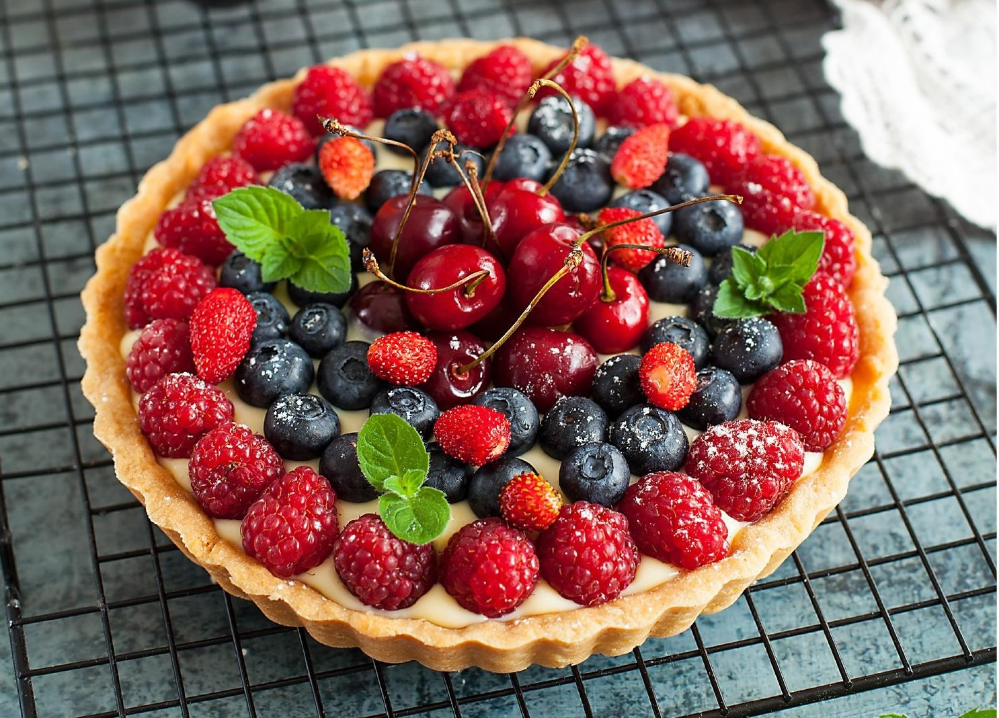

Этот тарт из песочного теста с заварным кремом — нестареющая классика. Тесто удобнее всего вымешивать в стационарном блендере или планетарном миксере с универсальной насадкой (лопаткой). Можно также вымесить руками: перемешать муку с сухими ингредиентами, затем сверху выложить масло и порубить его ножом или скребком на мелкие кусочки, подмешивая муку, а когда начнут образовываться крошки, собрать их в единый комок. Для выпекания основы лучше использовать форму со съемным дном. Основу и крем можно приготовить накануне, а в день подачи останется только собрать и украсить. Фрукты и ягоды можно использовать практически любые, по сезону: черешня, клубника, ежевика, земляника, красная смородина, персики и абрикосы.
для песочной основы:
для заварного крема: